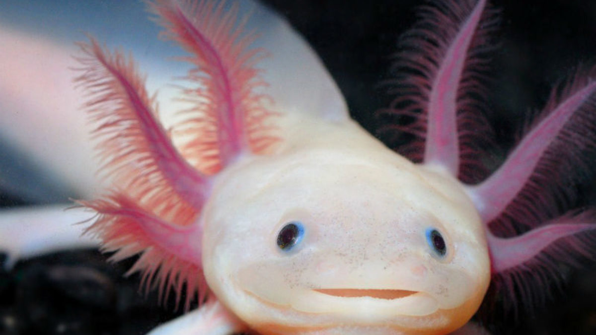
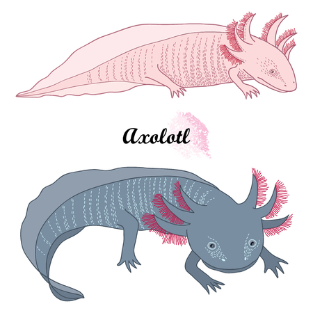

Ambystoma Mexicanum
Ambystoma Mexicanum
- Nombre Ajolote
- Ecosistema Acuatico
- Longevidad 10-15 años
- Ecozona Neotropico
El ajolote o axolote mexicano (Ambystoma mexicanum) es una especie de anfibio del orden de los caudados (Salamandras), familia de las "salamandras topo" y del género Ambystoma que está distribuido en México.
Es uno de los animales más raros del mundo y se encuentra en peligro crítico de extinción. Tiene la apariencia de un renacuajo, pero esto es debida a una condición que presenta esta salamandra llamada neotenia, eso quiere decir que este animal conserva su aleta dorsal de renacuajo aún en estado adulto.
Además de su curiosa apariencia, el ajolote contiene en sí algo muy inusual y eso es su capacidad de regenerar un miembro perdido. Es por eso, que quizás el ajolote sea una de las salamandras mas estudiadas del mundo. En un sentido es negativo, pues es una de las razones del porque se encuentra en peligro de extinción, gracias a la explotación de esta para usos medicinales.

Caracteristicas
El axolote, pariente cercano de la salamandra tigre, puede ser bastante grande y alcanza longitudes de hasta 30 centímetros, aunque su tamaño medio es de 15 cm. El axolote suele ser negro o marrón moteado, aunque también son relativamente comunes las variedades albinas y blancas, especialmente entre especímenes criados en cautividad.
El axolote es longevo, alcanza hasta 15 años de edad alimentándose de moluscos, gusanos, larvas de insectos, crustáceos y algún pez. Esta especie, acostumbrada al papel de predador en su hábitat, ha empezado a padecer la introducción de grandes peces en su hábitat lacustre. Entre las amenazas naturales se cuentan las aves de presa como las garzas.

Peligro de extincion
Su población está en declive, ya que la demanda de la cercana ciudad de México ha llevado a drenar y contaminar buena parte de las aguas del complejo lacustre de Xochimilco. También es muy común utilizarlo en el comercio de acuarios y el axolote asado se considera un manjar en México, lo que ha llevado a que su número se reduzca aun más. Se lo considera una especie muy amenazada.

Habitat
El axolote se encuentra únicamente en el complejo lacustre de Xochimilco (pronunciado Sochimilco), cercano a la ciudad de México, y difiere de la mayoría del resto de las salamandras en que vive permanentemente en el agua. En casos extremadamente raros, el axolote madura y sale del agua, pero en la mayoría de los casos prefieren permanecer en el fondo de los lagos y canales de Xochimilco.

Condicioness
- Tiene el poder de regeneracion
- Especies y tipos de ajolotes
- Respiran por varias vias
- Solo pueden vivir en lugares controladas por humanos

| Dominio |
Eucaryota |
| Reino |
Animalia |
| Filo |
Chordata |
| Clase |
Amphibia> |
| Orden |
Caudata |
| Especie |
Ambystoma Mexicanum |
Leyenda Ajolote